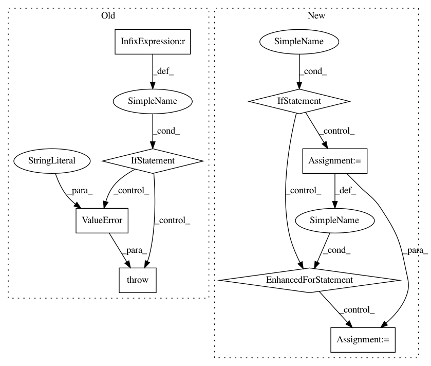

c676395da1a5ca321ba75f6a8025eefa4b99483e,pgmpy/models/ClusterGraph.py,ClusterGraph,get_cardinality,#ClusterGraph#Any#,211
Before Change
for factor in self.factors:
for variable, cardinality in zip(factor.scope(), factor.cardinality):
cardinalities[variable] = cardinality
if check_cardinality and len(set((x for clique in self.nodes() for x in clique))) != len(cardinalities):
raise ValueError("Factors for all the variables not defined.")
return cardinalities
def get_partition_function(self):
r
After Change
>>> student.get_cardinality(node="Alice")
2
if node:
for factor in self.factors:
for variable, cardinality in zip(factor.scope(), factor.cardinality):
if node == variable:
return cardinality
else:
cardinalities = defaultdict(int)
for factor in self.factors:
for variable, cardinality in zip(factor.scope(), factor.cardinality):
cardinalities[variable] = cardinality
return cardinalities
def get_partition_function(self):
r
Returns the partition function for a given undirected graph.
In pattern: SUPERPATTERN
Frequency: 3
Non-data size: 8
Instances
Project Name: pgmpy/pgmpy
Commit Name: c676395da1a5ca321ba75f6a8025eefa4b99483e
Time: 2017-10-04
Author: lohani.ayush01@gmail.com
File Name: pgmpy/models/ClusterGraph.py
Class Name: ClusterGraph
Method Name: get_cardinality
Project Name: neurosynth/neurosynth
Commit Name: e4f774a55446bb6f7fab43d999dd6fea24158e26
Time: 2014-10-27
Author: tyarkoni@gmail.com
File Name: neurosynth/analysis/cluster.py
Class Name: Clusterer
Method Name: cluster
Project Name: pgmpy/pgmpy
Commit Name: 9340e62be9d010c5db6724c27589d885fa08b27e
Time: 2017-10-04
Author: lohani.ayush01@gmail.com
File Name: pgmpy/models/FactorGraph.py
Class Name: FactorGraph
Method Name: get_cardinality